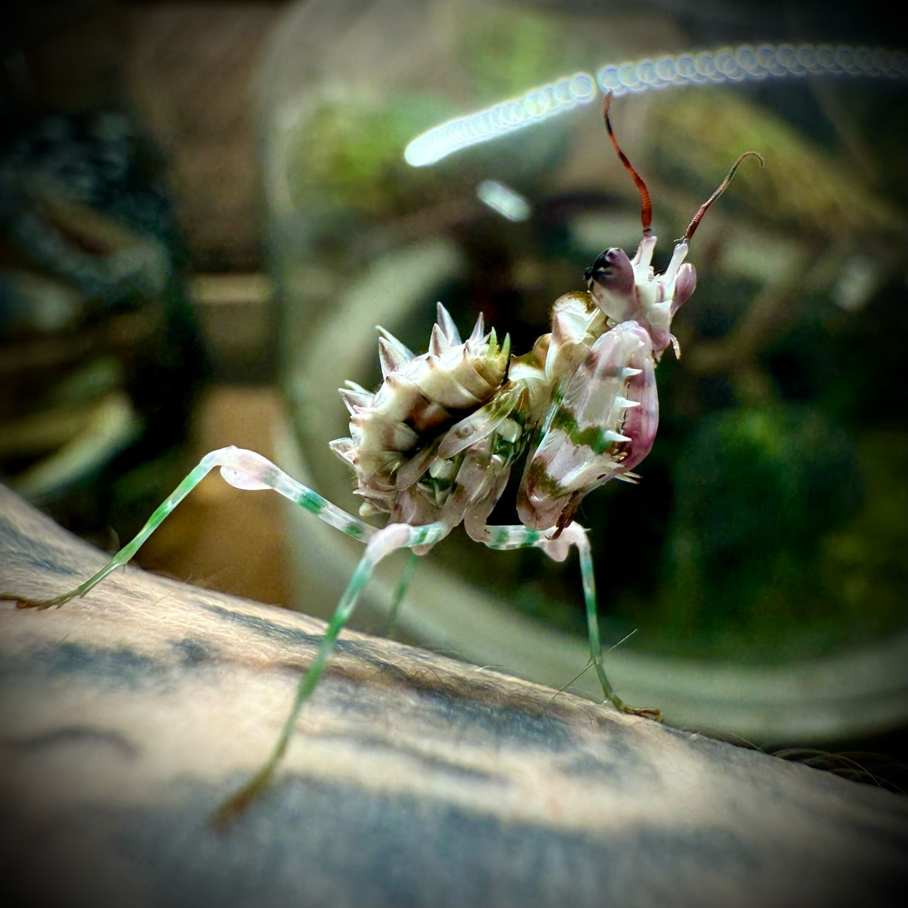
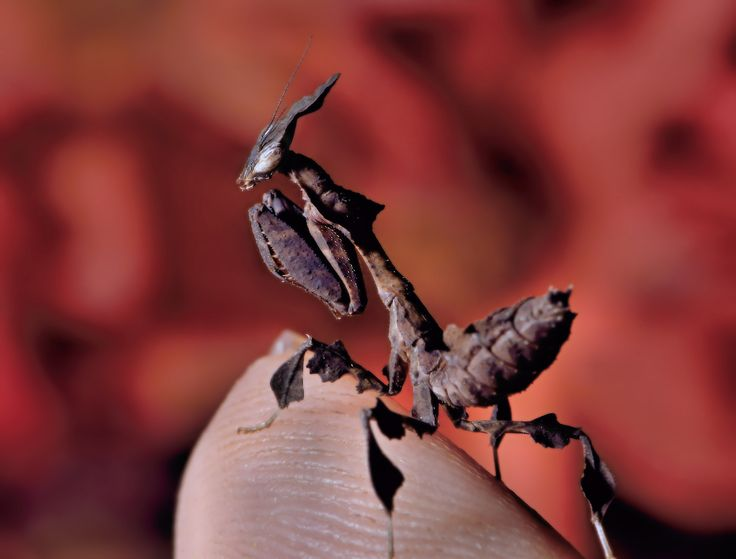
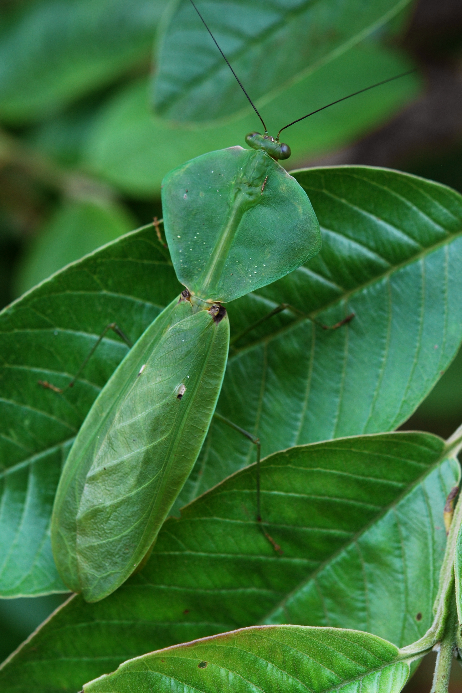

Mantises are fascinating insects that are found all over the world. They are known for their unique appearance and predatory behavior.
Mantises are important for the environment because they help to control pest populations and maintain ecological balance.

Spiny flower mantises are a type of mantis that are known for their unique appearance and ability to blend in with their surroundings.

Ghost mantises are a type of mantis that are known for their ability to blend in with their surroundings and their nocturnal behavior.

Shield mantises are a type of mantis that are known for their distinctive shield-like pronotum.